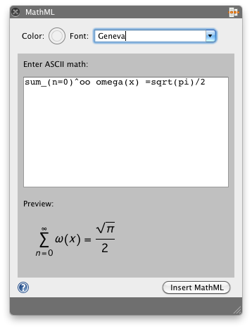
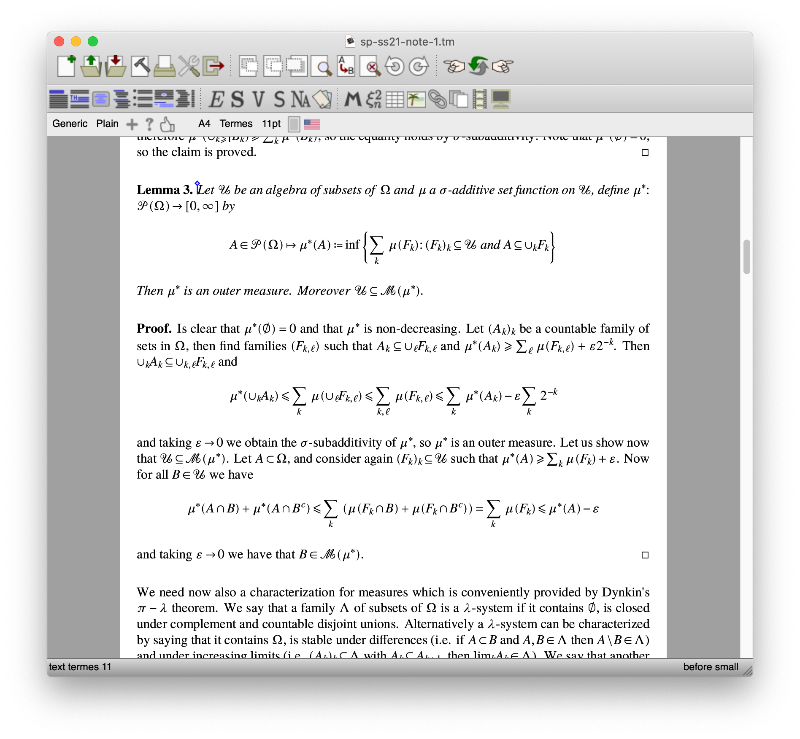
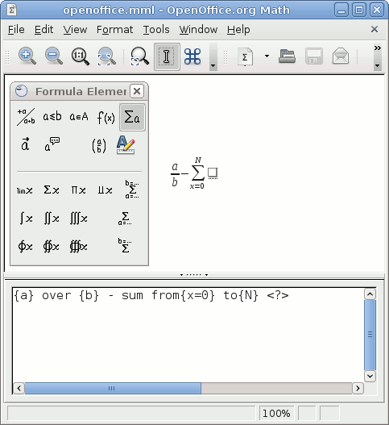

This page explains how to write mathematics using the MathML language. Just like HTML, MathML is described with tags and attributes. HTML becomes verbose when your document contains advanced structures like lists or tables but fortunately there are many generators from simple notations, WYSIWYG editors and other Content Management Systems to help writing Web pages.
Mathematical notations are even more complex with structures like fractions, square roots or matrices that are likely to require their own tags. As a consequence, good MathML authoring tools are more important and we describe some tools below. In particular, the Mozilla MathML team has been developing TeXZilla, a Javascript Unicode LaTeX-to-MathML converter that is intended to be used in many scenarios described here. Of course, the list is by no means exhaustive and you are invited to check out the W3C MathML software list where you can find various other tools.
Note that by design, MathML is well-integrated in HTML5 and in particular you can use usual Web features like CSS, DOM, Javascript or SVG. This is out of the scope of this document but anyone with basic knowledge of Web languages will easily be able to mix these features with MathML. Check out our demos and MathML references for more details.
You can use Presentation MathML inside HTML5 documents:
<!DOCTYPE html>
<html>
<head>
<title>MathML in HTML5</title>
</head>
<body>
<h1>MathML in HTML5</h1>
<p>
Square root of two:
<math>
<msqrt>
<mn>2</mn>
</msqrt>
</math>
</p>
</body>
</html>
Content MathML is not supported by browsers. It's recommended to convert your Content MathML markup into Presentation MathML before publishing it, for example with the help of the ctop.xsl stylesheet. Tools mentioned on this page generates Presentation MathML.
Unfortunately, some browsers are not able to render MathML equations or only have a limited support. Hence you will need to use a MathML polyfill to provide some fallback rendering. If you need only basic mathematical constructions such as those used on this MDN wiki then a small mathml.css stylesheet might be enough. To use it, just insert one line in your document header:
<script src="https://fred-wang.github.io/mathml.css/mspace.js"></script>
If you need more complex constructions, you might instead consider using the heavier MathJax library as a MathML polyfill:
<script src="https://fred-wang.github.io/mathjax.js/mpadded-min.js"></script>
Note that these two scripts perform feature detection of the mspace or mpadded elements (see the browser compatibility table on these pages). There is also a similar script to display a warning at the top of the page for browsers without good MathML support and let the users choose between one of the fallback above:
<script src="https://fred-wang.github.io/mathml-warning.js/mpadded-min.js"></script>
If you don't want to use this link to GitHub but instead to integrate these polyfills or others in your own project, you might need the detection scripts to verify the level of MathML support. For example the following function verifies the MathML support by testing the mspace element (you may replace mspace with mpadded):
function hasMathMLSupport() {
var div = document.createElement("div"), box;
div.innerHTML = "<math><mspace height='23px' width='77px'/></math>";
document.body.appendChild(div);
box = div.firstChild.firstChild.getBoundingClientRect();
document.body.removeChild(div);
return Math.abs(box.height - 23) <= 1 && Math.abs(box.width - 77) <= 1;
}
Alternatively, the following UA string sniffing will allow to detect the rendering engines with native MathML support (Gecko and WebKit). Note that UA string sniffing is not the most reliable method and might break from version to version:
var ua = navigator.userAgent;
var isGecko = ua.indexOf("Gecko") > -1 && ua.indexOf("KHTML") === -1 && ua.indexOf('Trident') === -1;
var isWebKit = ua.indexOf('AppleWebKit') > -1 && ua.indexOf('Chrome') === -1;
In order to get a good layout or to allow different style, it's important to have mathematical fonts available. It's always good to provide a link to MDN's Font Instructions, so that your visitors can verify whether they have appropriate fonts installed on their system. It's also good to provide a fallback with Web fonts.
Prior to Gecko 31.0 {{GeckoRelease("31.0")}}, it was a bit tedious to setup math fonts, see the font instructions for Mozilla 2.0. For Gecko 31.0 {{GeckoRelease("31.0")}}, this is much simpler and is compatible with any Web rendering engine with MathML support. For example, here is a minimal stylesheet to use Latin Modern for the text and Latin Modern Math for the mathematics:
@namespace url('http://www.w3.org/1999/xhtml');
@namespace m url('http://www.w3.org/1998/Math/MathML');
body, m|mtext {
font-family: Latin Modern;
}
m|math {
font-family: Latin Modern Math;
}
You can then use the @font-face rule as usual to provide WOFF fallback for Latin Modern and Latin Modern Math. See this GitHub repository to get WOFF fonts and sample CSS stylesheets to use on your Web site and check its test page.
If for some reason you need to use MathML in XML documents, be sure to satisfy the usual requirements: well-formed document, use of correct MIME type, MathML namespace "http://www.w3.org/1998/Math/MathML" on <math> roots. For example, the XHTML version of the previous example looks like this:
<?xml version="1.0" encoding="UTF-8"?>
<!DOCTYPE html PUBLIC "-//W3C//DTD XHTML 1.1 plus MathML 2.0//EN"
"http://www.w3.org/Math/DTD/mathml2/xhtml-math11-f.dtd">
<html xmlns="http://www.w3.org/1999/xhtml">
<head>
<title>XHTML+MathML Example</title>
</head>
<body>
<h1>XHTML+MathML Example</h1>
<p>
Square root of two:
<math xmlns="http://www.w3.org/1998/Math/MathML">
<msqrt>
<mn>2</mn>
</msqrt>
</math>
</p>
</body>
</html>
Modern mail clients may send and receive emails in the HTML5 format and thus can use MathML expressions. Be sure to have the "send as HTML" and "view as HTML" options enabled. In Thunderbird, you can use the "Insert HTML" command to paste your HTML+MathML code. MathBird is a convenient add-on for Thunderbird to insert such MathML expressions using the AsciiMath input syntax. Moreover, a LaTeX-to-MathML input box has also been integrated into SeaMonkey since version 2.28 and into Thunderbird since version 31. Again, the way MathML is handled and the quality of the MathML rendering depends on the mail client. Even if your browser supports MathML, your Webmail may prevent you to send or receive mails with MathML inside.
Gecko-based instant messaging clients can integrate a Javascript-based text-to-MathML converter (mentioned below) and then render the MathML expressions generated from the (plaintext) instant messages. For example, there is an Instantbird add-on that handles LaTeX expressions.
There are many simple notations (e.g. wiki or markdown syntaxes) to generate HTML pages. The same is true for MathML: for example ASCII syntaxes as used in calculators or the more powerful LaTeX language, very popular among the scientific community. In this section, we present some of these tools to convert from a simple syntax to MathML.
In a Web environment, the most obvious method to convert a simple syntax into a DOM tree is to use Javascript and of course many libraries have been developed to perform that task.
TeXZilla has an <x-tex> custom element, that can be used to write things like
<x-tex>\frac{x^2}{a^2} + \frac{y^2}{b^2} = 1</x-tex>
and get it automatically converted into MathML. This is still a work-in-progress, but could be improved in the future thanks to Web Components and shadow DOM. Alternatively, you can use the more traditional Javascript parsing of expressions at load time as all the other tools in this section do.
One simple client-side conversion tools is ASCIIMathML. Just download the ASCIIMathML.js script and copy it to your Web site. Then on your Web pages, add a <script> tag to load ASCIIMathML and the mathematical expressions delimited by ` (grave accent) will be automatically parsed and converted to MathML:
<html> <head> ... <script type="text/javascript" src="ASCIIMathML.js"></script> ... </head> <body> ... <p>blah blah `x^2 + y^2 = r^2` blah ... ...
LaTeXMathML is a similar script that allows to parse more LaTeX commands. The installation is similar: copy LaTeXMathML.js and LaTeXMathML.standardarticle.css, add links in the header of your document and the LaTeX content of your Web page marked by the "LaTeX" class will be automatically parsed and converted to HTML+MathML:
<head>
...
<script type="text/javascript" src="LaTeXMathML.js"></script>
<link rel="stylesheet" type="text/css" href="LaTeXMathML.standardarticle.css" />
...
</head>
<body>
...
<div class="LaTeX">
\documentclass[12pt]{article}
\begin{document}
\title{LaTeXML Example}
\maketitle
\begin{abstract}
This is a sample LaTeXML document.
\end{abstract}
\section{First Section}
$$ \sum_{n=1}^{+\infty} \frac{1}{n^2} = \frac{\pi^2}{6} $$
\end{document}
</div>
...
jqMath is another script to parse a simple LaTeX-like syntax but which also accepts non-ASCII characters like √{∑↙{n=1}↖{+∞} 6/n^2} = π² to write . The installation is similar: download and copy the relevant Javascript and CSS files on your Web site and reference them in your page header (see the COPY-ME.html file from the zip archive for an example). One of the advantage of jqMath over the previous scripts is that it will automatically add some simple CSS rules to do the mathematical layout and make the formulas readable on browsers with limited MathML support.
An alternative way is to parse the simple syntax before publishing your web pages. That is, you use command-line programs to generate them and publish these static pages on your server.
TeXZilla can be used from the command line and will essentially have the same support as itex2MML described below. However, the stream filter behavior is not implemented yet.
If you only want to parse simple LaTeX mathematical expressions, you might want to try tools like itex2MML or Blahtex. The latter is often available on Linux distributions. Let's consider the former, which was originally written by Paul Gartside at the beginning of the Mozilla MathML project and has been maintained by Jacques Distler since then. It's a small stream filter written in C/C++ and generated with flex and bison ; in particular it is very fast. Install flex/bison as well as the classical compiler and make tools. On Unix, you can then download itex2MML, build and install it:
wget http://golem.ph.utexas.edu/~distler/blog/files/itexToMML.tar.gz; \ tar -xzf itexToMML.tar.gz; \ cd itex2MML/itex-src; make sudo make install
Now suppose that you have a HTML page with TeX fragments delimited by dollars:
input.html
...
</head>
<body>
<p>$\sqrt{a^2-3c}$</p>
<p>$$ {\sum_{i=1}^N i} = \frac{N(N+1)}{2} $$</p>
</body>
</html>
Then to generate the HTML page input.html with TeX expressions replaced by MathML expressions, just do
cat input.html | itex2MML > output.html
There are even more sophisticated tools to convert arbitrary LaTeX documents into HTML+MathML. For example TeX4ht is often included in TeX distributions and has an option to use MathML instead of PNG images. This command will generate an XHTML+MathML document foo.xml from a foo.tex LaTeX source:
mk4ht mzlatex foo.tex # Linux/Mac platforms mzlatex foo.tex # Windows platform
Note that tex4ebook relies on TeX4ht to generate EPUB documents.
LaTeXML is another tool that can generate HTML5 and EPUB documents. Windows users can watch this video tutorial. Given a foo.tex LaTeX file, you can use these simple commands:
latexmlc --dest foo.html foo.tex # Generate a HTML5 document foo.html latexmlc --dest foo.epub foo.tex # Generate an EPUB document foo.epub
To handle the case of browsers without MathML support, you can use the --javascript parameter to tell LaTeXML to include one of the fallback scripts:
latexmlc --dest foo.html --javascript=https://fred-wang.github.io/mathml.css/mspace.js foo.tex # Add the CSS fallback latexmlc --dest foo.html --javascript=https://fred-wang.github.io/mathjax.js/mpadded-min.js foo.tex # Add the MathJax fallback
If your LaTeX document is big, you might want to split it into several small pages rather than putting everything in a single large page. For example, this will split the pages at the \section level:
latexmlc --dest foo.html --splitat=section foo.tex
TeXZilla, LaTeXML and Mathoid and can be used to perform server-side LaTeX-to-MathML conversion. Instiki and MediaWiki are two wiki engines that support LaTeX-to-MathML conversion.
TeXZilla has several interfaces, including a CKEditor plugin used on MDN, an online demo, a Firefox add-on or a FirefoxOS Webapp. It has also been integrated into SeaMonkey since version 2.28 and into Thunderbird since version 31. Abiword contains a small equation editor, based on itex2MML. Finally, Bluegriffon has an add-on to insert MathML formulas in your document, using ASCII/LaTeX-like syntax.

Firemath is an extension for Firefox that provides a WYSIWYG MathML editor. A preview of the formula is displayed using the rendering engine of Mozilla. The generated MathML code is available at the bottom. Use the text field for token elements and buttons to build advanced constructions. Once you are done, you can save your document as a XHTML page.
LyX is a graphical LaTeX editor, which has built-in support for XHTML+MathML export and can be configured to use similar LaTeX-to-(X)HTML converters. You can for example, you can configure it to use LaTeXML HTML5/EPUB export.
TeXmacs is a free structured editor with special facilities for mathematics, graphics and interactive sessions. TeXmacs documents can be exported in XHTML+MathML.

OpenOffice and LibreOffice have an equation editor (File → New → Formula). It is semi-WYSIWYG: you enter the source of the formula using the equation panel/keyboard and a preview of the formula is regularly refreshed. The editor uses its own syntax "StarMath" for the source but MathML is also generated when the document is saved. To get the MathML code, save the document as mml and open it with any text editor. Alternatively, you can extract the odf file (which is actually a zip archive) and open an xml file called content.xml.

Amaya is the W3C's web editor, which is able to handle MathML inside XHTML documents. Use the Elements and the Special Chars panels to create various advanced mathematical constructs. Simple text such as a+2 is automatically parsed and the appropriate MathML markup is generated. Once you are done, you can directly save your XHTML page and open it in Mozilla.
Inftyreader is able to perform some Optical Character Recognition, including translation of mathematical equations into MathML. Other tools can do handwriting recognition such as the Windows Math Input Panel or the online converter Web Equation.